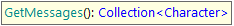

This command is useful to retrieve all messages, notifications, balloons, etc. shown on a webpage.  Returns: A collection of texts containing all messages present on the page. Examples: &charsCollection = &driver.GetMessages() If you want to validate that a certain message is shown you can do it like this:
&driver.Verify(&driver.GetMessages().ToJson().Contains("Message to validate is being shown"))
AvailabilityThis command is available since GeneXus 17 upgrade 1. |
| Backlinks | |
| Changelog GXtest | Toc:GXtest v4 |